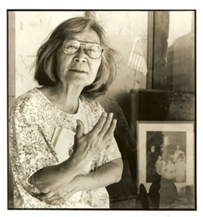

Story
We will read Yamamoto’s story Seventeen Syllables.

From https://encyclopedia.densho.org/Hisaye_Yamamoto/
A Southern California Nisei writer of short stories, Hisaye Yamamoto (1921–2011) was among the first Japanese American writers to win national renown after World War II. Yamamoto’s upbringing in an immigrant farming community and her incarceration in a World War II U.S. government prison camp formed the basis for some of her best-known stories, notable for their sensitive portrayal of the emotionally and artistically constricted lives of Issei women and intergenerational family dynamics. Oblique, often deadpan in delivery and told with quiet humor and bracing candor, they reveal the love affairs, madness, psychic and physical brutality that lay beneath the placid surface of Issei and Nisei life. The subject matter, precision and grace of Yamamoto’s works have led critics to compare her to short story masters Katherine Mansfield, Flannery O’Connor, and Grace Paley.
We will read Yamamoto’s story Seventeen Syllables.
{{% youtube "I6MVtSZJhGE" %}}
A Beautiful Scrolly Story about Yamamoto and her influence. https://artsandculture.google.com/story/hisaye-yamamoto-an-american-story-american-writers-museum/OAVRaqAwV3tpLA?hl=en
Reading Yamamoto. https://faculty.georgetown.edu/bassr/heath/syllabuild/iguide/yamamoto.html
Gangs of Wasseypur. https://youtu.be/To54dv2jnJg>
A song from more than 50 years ago? For Teens!?? You must be joking!!! But just maybe….here goes!
Starring: Bharat Bhushan & Madhubala & Pradeep Kumar
Artist: Mohammed Rafi & Lata Mangeshkar
Lyrics: Rajendra Krishan
Composed: Madan Mohan Kohli
Movie/Album: Gateway Of India (1957)
{{% youtube "H8qENpk2GuE" %}}
| Hindi (and some Urdu!) lyrics | English Translation |
|---|---|
| Do ghadi wo jo paas aa baithe (2) | For Two Moments, when They sat beside me |
| Ham zamane se dur ja baithe(2) | We were far away from everybody |
| —– | —- |
| Bhul ki unka hamnashi ho ke (2) | ’Twas a mistake to share a drink |
| Royege dil ko umar bhar kho ke (2) | I will cry all my life for my Lost Heart |
| Haay kya chiz thi luta baithe | Alas, what a Thing it was, That I have Lost… |
| Do Ghadi… | Two Moments… |
| —- | —- |
| Dil ko ek din zarur jana tha (2) | The Heart had to leave One Day |
| Vahi pahucha jaha thikana tha (2) | There It Reached, where it was Right |
| Dil vahi dil jo dil me ja baithe | That is a Heart, that Resides in a Heart |
| Do Ghadi… | Two Moments… |
| —- | —– |
| Ek dil hi tha gham gusaar (2) | The Heart was my One Solace |
| meharbaan khaas raazdaar apna (2) | My Patron, my Confidant… |
| ghair ka kyun use banaa baithe | Why Did I Give it Away to a Stranger !! |
| Do Ghadi… | Two Moments… |
| —- | —- |
| Ghair bhi to koi haseen hogaa (2) | The Stranger must also have been Lovely |
| Dil yoon hi de diya nahin hoga (2) | You would not have parted with your Heart Just Like That |
| Dekhkar kuchh to chot khaa baithe | You Saw Them, and were Wounded |
| Do ghadi wo jo paas aa baithe | Two Moments… |
Your Mama’s “Arranged Marriage”
A Rant in GenZ language about almost anything (please create a Glossary in an Appendix!)
Getting “(ab)used” to Dad’s / Mom’s taste in Music
The communication between parents and child in “Seventeen Syllables” and in Grace Paley’s “The Loudest Voice”.